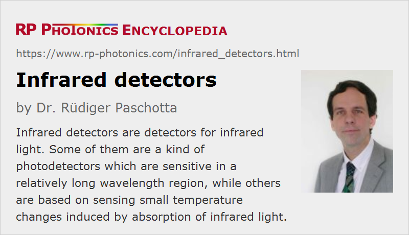

Infrared Detectors
Definition: detectors for infrared light
More general term: photodetectors
German: Infrarot-Detektoren
Categories: photonic devices, light detection and characterization
How to cite the article; suggest additional literature
Author: Dr. Rüdiger Paschotta
Infrared detectors are detectors for infrared light. Some of them are photodetectors (photon detectors) which are sensitive in a relatively long wavelength region, while others are based on sensing small temperature increases induced by absorption of infrared light.
One may in principle also regard laser viewing cards as infrared detectors, which however do not deliver a signal, but emit some visible light.
Infrared Photodetectors
Infrared Photodiodes
For the short-wavelength part of the near infrared, ordinary silicon photodiodes can be used; they are responsivity falls off for wavelengths somewhere between 1 μm and 1.1 μm, depending on the thickness of the active region.
For longer wavelengths, semiconductor materials with a lower band gap energy are required, so that photons with lower energy are sufficient to create a carrier which contribute to some photocurrent. Indium gallium arsenide (InGaAs) detectors are suitable for wavelengths up to ≈1.7 μm. Similarly, germanium (Ge) photodiodes can be used at ≈0.9 μm to 1.6 μm. For longer wavelengths even beyond 5 μm, indium antimonide (InSb) photodiodes are available.
Infrared Photoconductive Detectors
Infrared light at wavelengths sometimes beyond 5 μm can be detected with lead salt detectors, e.g. containing lead selenide (PbSe) or lead sulfide (PbS). Such devices are not fabricated with epitaxial growth, as e.g. InGaAs photodiodes, but rather by deposition of thin polycrystalline films. They are photoconductors (photoresistors), not photodiodes, i.e., they do not contain a p–n junction but exhibit a reduction in electrical resistance caused by incident light, which induces intraband transitions. Lead salt detectors can be used at room temperature, although better performance is possible with cooled detectors. Note that cooling does not only reduce the dark current and therefore improve the sensitivity, but also reduces the band gap energy, so that light with longer wavelengths can be detected.
Another detector technology, which is widely used, is based on photoresistors containing mercury cadmium telluride (MCT, HgxCd1−xTe). Through the composition parameter (i.e., the mercury content), the bandgap energy can be tuned in a wide range. That way, detection at rather long wavelengths (partly beyond 12 μm) is possible. MCT detectors are usually cooled, and they can be made as image sensors (or focal plane arrays), which are mostly used for thermal imaging.
For even longer infrared wavelengths – even in the far infrared somewhat beyond 200 μm wavelength –, there are highly doped silicon and germanium detectors. Such long-wave infrared detectors are extrinsic (impurity band) semiconductor devices, i.e., they rely on additional energy levels introduced by impurities like arsenic, copper, gold or indium. They need to be cooled to very low temperatures (e.g. 4 K with liquid helium), because thermal excitation would otherwise mask any infrared light signals.
Another technology is that of quantum well infrared photodetectors (QWIP) based on GaAs/AlGaAs. They are cooled photoconductive detectors containing multiple quantum wells, Where instead of interband transitions one utilizes transitions involving quantum well bound states and possibly continuum states. For example, GaAs/AlGaAs-based QWIPs can provide sensitivity around 6–20 μm, but often in a relatively narrow spectral regions (defined by the utilized transitions). At low operation temperatures of e.g. 50 K, they have some advantages over MCT detectors, particularly for the fabrication of imaging detector arrays. There are also quantum dot infrared photodetectors (QDIP), where one uses quantum dots instead of quantum wells.
Some of the infrared detector materials contain hazardous substances like lead, cadmium and mercury. Therefore, their use is increasingly restricted, e.g. by the European RoHS regulations. Temporary exceptions, however, are in place for specific applications, where it is difficult to find substitutes.
Thermal Infrared Detectors
Thermal detectors do not directly detect photons, but rather respond to a temperature increase caused by absorption of incoming infrared light. They can be based on different technologies:
Pyroelectric Detectors
There are pyroelectric detectors based on ferroelectric materials such as lithium tantalate, generating a small electric voltage pulse in response to a temperature gradient caused by an incident light pulse. They can be used e.g. in optical energy meters for measuring the pulse energy of a Q-switched laser, including the pulse-to-pulse fluctuations.
Bolometers
A bolometer sensor contains a thin infrared-absorbing plate, made e.g. of amorphous silicon (aSi) or vanadium oxide, which is suspended with two electrodes. One can then measure the temperature-dependent electrical resistance of the plate. Note that without incoming infrared light the temperature of the plate will relax towards the heat sink temperature, while incoming radiation will increase the temperature above that of the substrate. The readings will thus have to be corrected according to the substrate temperature, if that is not held constant. A metal mirror below the plate may be used to back-reflect non-absorbed infrared light and at the same time to reduce the thermal radiation from the substrate.
Bolometers can also be made in the form of microbolometers, e.g. for use in infrared cameras.
Thermal detectors are often operated at room temperature, i.e., without cooling. Often, however, they are temperature-stabilized, i.e., the operation temperature is kept constant, typically with a small Peltier cooler, but not at a particularly low temperature. With cooled operation, one can further improve the performance.
Trade-off between Sensitivity and Bandwidth
Thermal detectors are subject to a fundamental trade-off between sensitivity and bandwidth. This can be best understood by considering a rather simplified model, where the absorber, the temperature of which is measured, has a certain heat capacity (which is proportional to its mass) and is thermally connected to the outside world with some thermal resistance. Ignoring the thermal capacitance of any other things, for example the thermal connection of the absorber to the outside world, one obtains rather simple relations between heating power, induced temperature rise and bandwidth:
- The temperature rise and thus the measurement signal are proportional to the thermal resistance. Therefore, a high thermal resistance is beneficial for obtaining a high sensitivity. Also, it can help to use a rather small absorber, if the incident light can be well focused to it.
- On the other hand, there is a thermal time constant which is proportional to the heat capacity and inversely proportional to the thermal resistance. Therefore, a high thermal resistance will make the detector slow.
- Besides, there is a fundamental limitation by thermal noise in the form of temperature fluctuations. One can show that the standard deviation of the temperature of the absorber is proportional to the temperature and inversely proportional to the square root of the thermal capacitance. This limitation is most relevant for miniaturized absorbers, as used in microbolometers – which, however, may in practice still be limited by other noise sources, e.g. those of the temperature sensor.
Suppliers
The RP Photonics Buyer's Guide contains 14 suppliers for infrared detectors. Among them:
Questions and Comments from Users
Here you can submit questions and comments. As far as they get accepted by the author, they will appear above this paragraph together with the author’s answer. The author will decide on acceptance based on certain criteria. Essentially, the issue must be of sufficiently broad interest.
Please do not enter personal data here; we would otherwise delete it soon. (See also our privacy declaration.) If you wish to receive personal feedback or consultancy from the author, please contact him e.g. via e-mail.
By submitting the information, you give your consent to the potential publication of your inputs on our website according to our rules. (If you later retract your consent, we will delete those inputs.) As your inputs are first reviewed by the author, they may be published with some delay.
See also: infrared light, photodetectors, photodiodes, photoconductive detectors, thermal detectors, infrared cameras, thermal imaging, thermal radiation
and other articles in the categories photonic devices, light detection and characterization
|  |
If you like this page, please share the link with your friends and colleagues, e.g. via social media:
These sharing buttons are implemented in a privacy-friendly way!